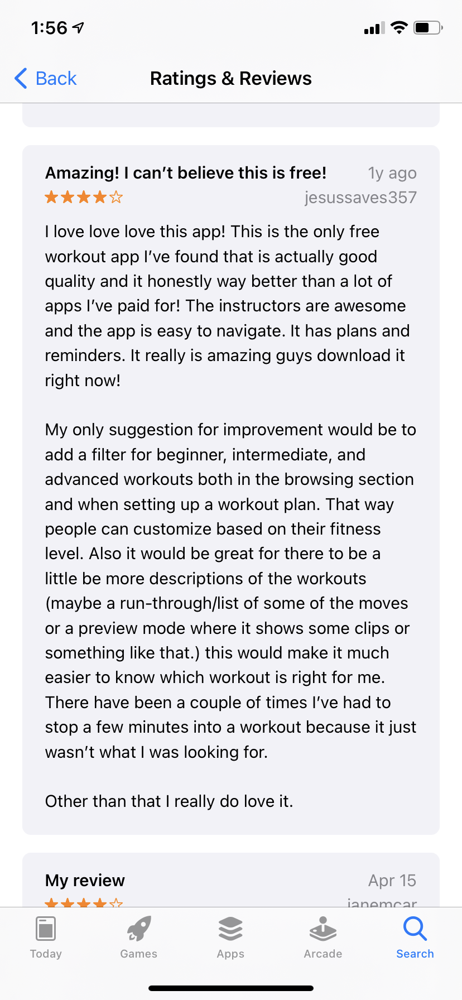
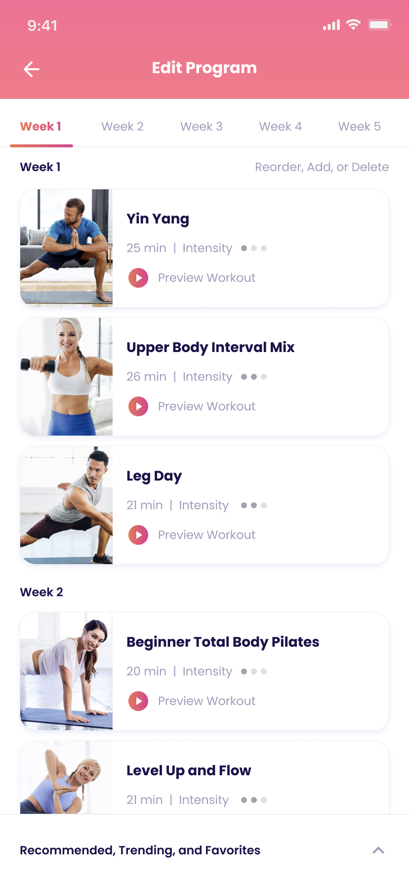
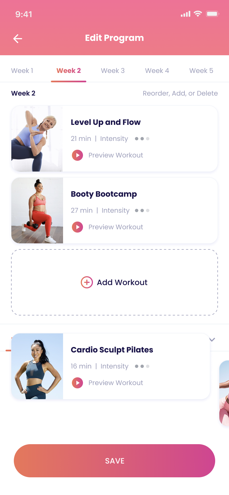

Customizable Fitness Program

FitOn offers free, celebrity-led fitness videos and builds a "personalized plan" from a handful of upfront preferences — but gives users almost no way to adjust that plan once it exists. As a regular user, and a busy parent with limited workout windows, I used this as a self-directed case study in progressive personalization.
Once a plan is generated, there's little users can do to refine it further. Favoriting a workout drops it into a separate section that's disconnected from the plan itself, and as new workouts are uploaded, that favorites list becomes harder to navigate. Users can't delete workouts they don't want or reorder the ones they do.
I combined personal usage friction with a pass through App Store reviews, which surfaced the same requests repeatedly: delete workouts you don't like, add more of the ones you do, and preview a clip before committing to a full workout.
A competitive check against Workout Women (4.8★, 419K ratings vs. FitOn's 4.9★, 138K ratings) showed that even a larger competitor hadn't solved deeper plan customization — a real opportunity to differentiate rather than a solved problem I was re-litigating.



I scoped delivery in four phases by build cost and risk, rather than proposing everything at once: